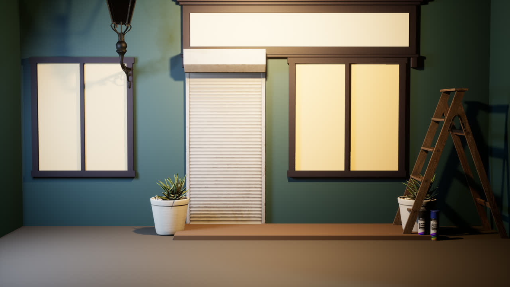
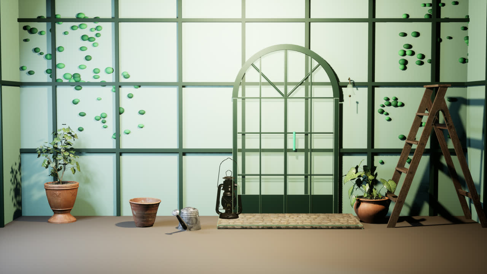
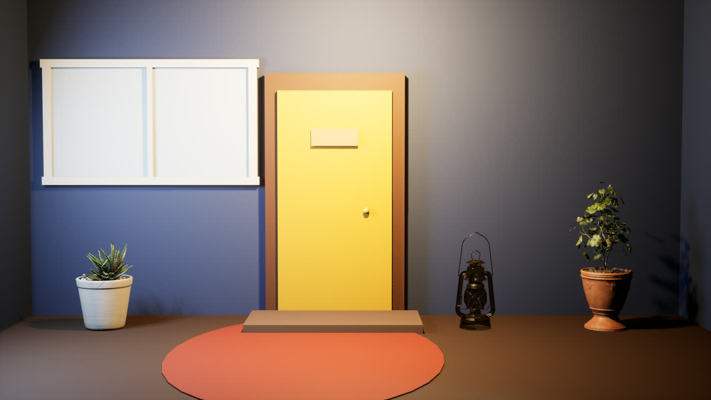
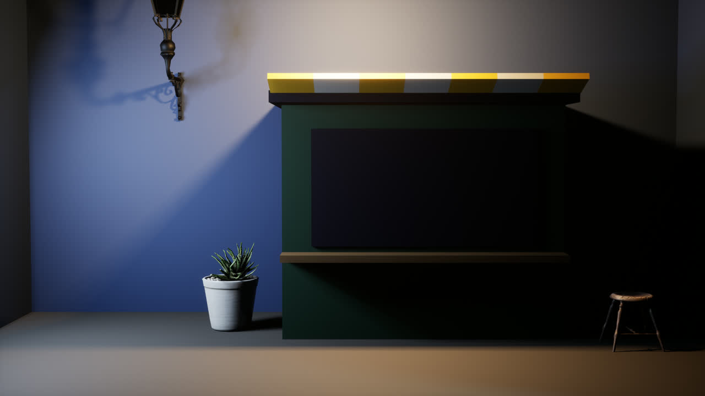
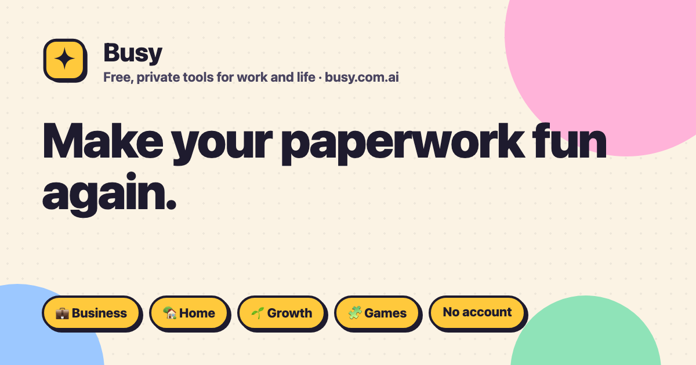
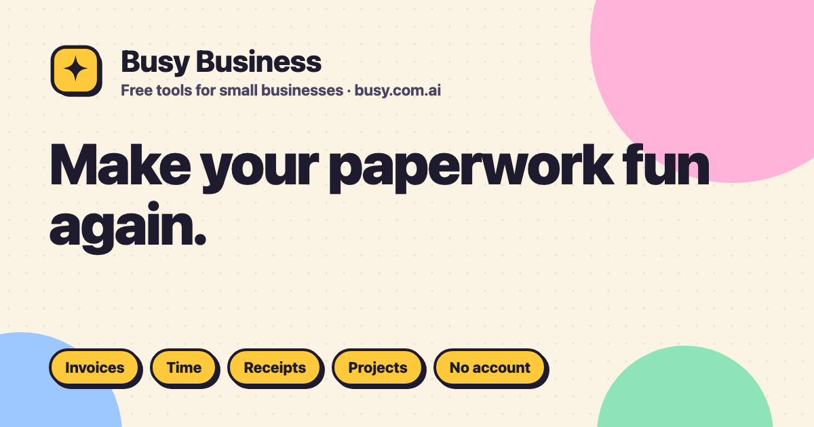
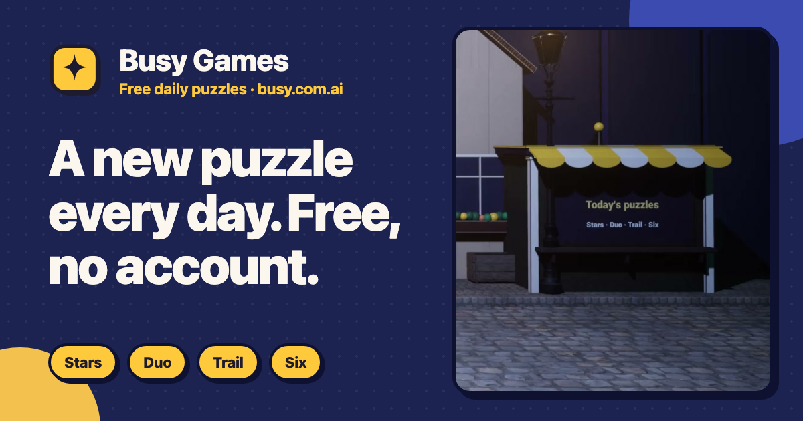
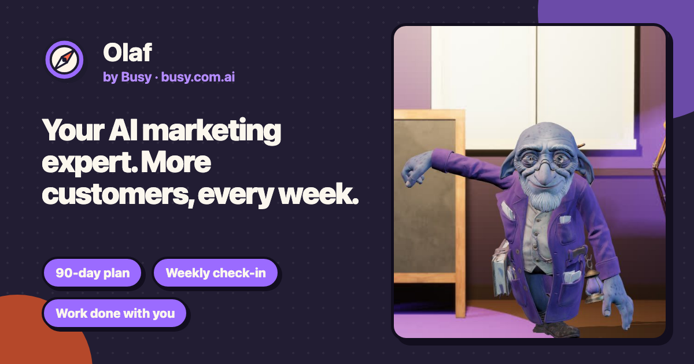
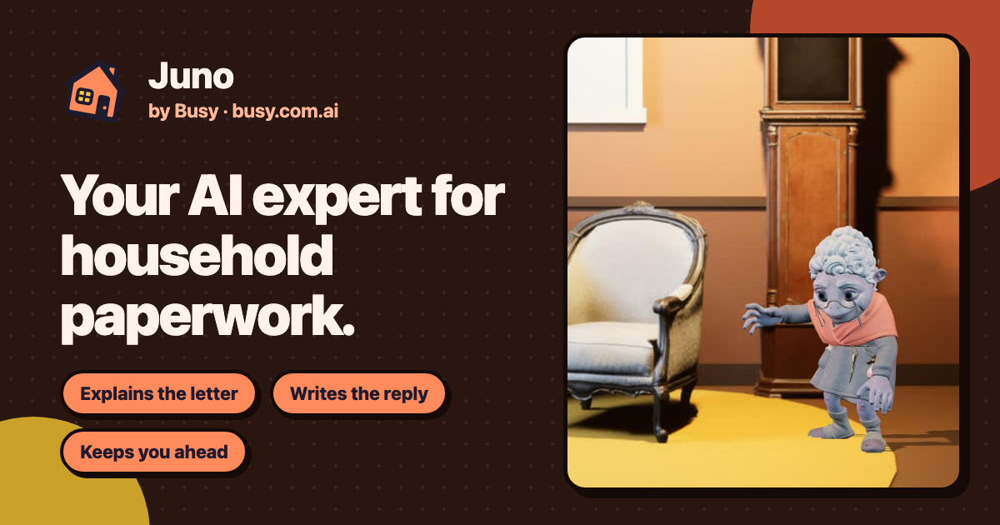

Press and partners
Writing about Busy, or listing it? Everything here is yours to use with that, as it is.
Busy in a sentence
Busy makes free, private tools for work and life. Everything stays in your own folder: no account, no subscription.
Busy in a paragraph
Busy makes free, private tools for work and life, in suites: Busy Business (thirteen tools for small businesses and freelancers to grow and run the business: a marketing studio with a brand profile and a year plan, a brand kit, projects, invoices and quotes, time, receipts, money, clients, documents, subscriptions, trips and stock), Busy Growth (free tools to grow your career: a library, skills, wins, a job tracker, a CV and LinkedIn builder and more), Busy Home (free tools for household paperwork: documents with expiry reminders, contracts with the last day to cancel, upkeep, a home inventory, letters, moving and a Just in Case binder), Busy Rentals (free rental management for people who let one home or a few: every date, certificate, deposit, rent payment and receipt, with the landlord's year for England, the Netherlands and Germany), Busy Kitchen (a free cultural kitchen: 1,886 dishes from the six kitchens of Busy's six languages, matched to what's in your fridge, with a recipe for every dish) and Busy Games (free daily brain games). Each suite is a free app for Mac and Windows, or runs in the browser, and keeps everything in the owner's own folder, with no account and no subscription. Each suite also comes as a paid app with an AI expert inside, bought once on itch.io: Olaf for business, Ivy for professional growth, Juno for household paperwork, Wren for letting a home, Sal for home cooking. Busy also makes the game Busy Street.
The name is Busy, written like that, at busy.com.ai. The experts are written Olaf by Busy, Ivy by Busy, Juno by Busy, Wren by Busy and Sal by Busy. More facts: About Busy.
Logos


The characters
Rendered in the Busy Studio. Please keep them as they are: no new poses, words or colours.


The places









Short films
Eight seconds each, made to loop.
Product films
Half a minute to a minute each: the five apps with their experts, the two Busy Street games and the brain games.
Where it is sold
The tools and the brain games are free on this site. The paid apps and the Busy Street games are sold on itch.io, each on its own page, paid once:
- Busy Business with Olaf · $7.99 : Mac and Windows
- Busy Growth with Ivy · $1.49 : Mac and Windows
- Busy Home with Juno · $1.49 : Mac and Windows
- Busy Street: Tuck's Errand · $1.99 : Mac and Windows
- Busy Street 3D · $3.99 : Mac (Apple silicon)
- Busy Rentals with Wren · $4.99 : Mac and Windows
- Busy Kitchen with Sal · $1.49 : Mac and Windows
The experts work on the buyer’s own Claude: the Claude app with a paid plan, or a Claude API key.
Share images










